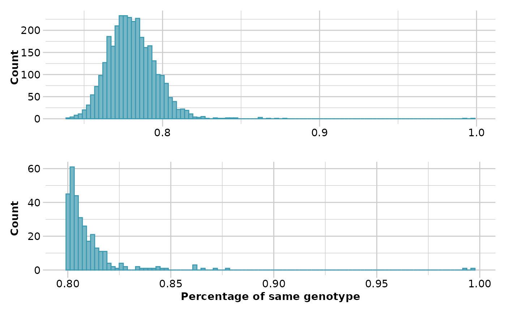

Identify replicated individuals
gl.report.replicates(
x,
loc_threshold = 100,
perc_geno = 0.99,
plot.out = TRUE,
plot_theme = theme_dartR(),
plot_colors = two_colors,
bins = 100,
verbose = NULL
)Name of the genlight object containing the SNP data [required].
Minimum number of loci required to asses that two individuals are replicates [default 100].
Mimimum percentage of genotypes in which two individuals should be the same [default 0.99].
Specify if plot is to be produced [default TRUE].
User specified theme [default theme_dartR()].
Vector with two color names for the borders and fill [default two_colors].
Number of bins to display in histograms [default 100].
Verbosity: 0, silent or fatal errors; 1, begin and end; 2, progress log; 3, progress and results summary; 5, full report [default 2, unless specified using gl.set.verbosity].
A list with three elements:
table.rep: A dataframe with pairwise results of percentage of same genotypes between two individuals, the number of loci used in the comparison and the missing data for each individual.
ind.list.drop: A vector of replicated individuals to be dropped. Replicated individual with the least missing data is reported.
ind.list.rep: A list of of each individual that has replicates in the dataset, the name of the replicates and the percentage of the same genotype.
This function uses an C++ implementation, so package Rcpp needs to be installed and it is therefore fast (once it has compiled the function after the first run).
Ideally, in a large dataset with related and unrelated individuals and several replicated individuals, such as in a capture/mark/recapture study, the first histogram should have four "peaks". The first peak should represent unrelated individuals, the second peak should correspond to second-degree relationships (such as cousins), the third peak should represent first-degree relationships (like parent/offspring and full siblings), and the fourth peak should represent replicated individuals.
In order to ensure that replicated individuals are properly identified, it's important to have a clear separation between the third and fourth peaks in the second histogram. This means that there should be bins with zero counts between these two peaks.
Other report functions:
gl.report.bases(),
gl.report.callrate(),
gl.report.diversity(),
gl.report.hamming(),
gl.report.hwe(),
gl.report.ld.map(),
gl.report.locmetric(),
gl.report.maf(),
gl.report.monomorphs(),
gl.report.overshoot(),
gl.report.pa(),
gl.report.parent.offspring(),
gl.report.rdepth(),
gl.report.reproducibility(),
gl.report.secondaries(),
gl.report.sexlinked(),
gl.report.taglength()
# \donttest{
res_rep <- gl.report.replicates(platypus.gl, loc_threshold = 500,
perc_geno = 0.85)
#> Starting gl.report.replicates
#> Processing genlight object with SNP data
#> Warning: data include loci that are scored NA across all individuals.
#> Consider filtering using gl <- gl.filter.allna(gl)
#>

#> Completed: gl.report.replicates
#>
# }